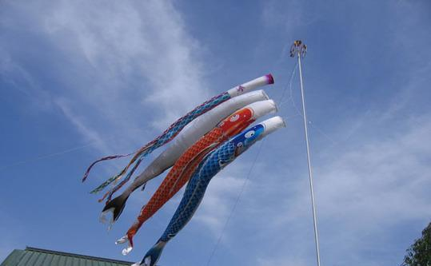
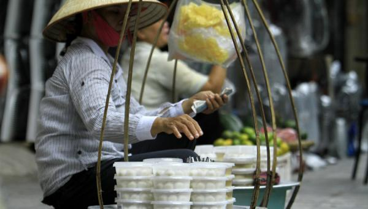

哈罗各位，端午节到啦，你是在家吃粽子呢还是吃粽子呢还是吃粽子呢……？
但是，现在“歪果仁”们在端午节玩得不亦乐乎呢…
韩国人端午忙洗头
“小的时候，妈妈会让我们用菖蒲水洗头，然后再洗澡，据说这样一年可以非常健康。韩国到现在很多人到了端午节这一天，还保持着用菖蒲水来洗澡、洗头的风俗习惯。”一位旅居中国的韩国女士这样回忆。
在韩国，全国性的端午习俗已日渐淡化，只有江陵地区的“江陵端午祭”保留下来。中国人的端午节是纪念屈原，而韩国人在这一节日里“祭”的是各路神灵，祈求保佑一年五谷丰登。“江陵端午祭”仪式繁琐，通常会持续一个月，期间还会有摔跤、荡秋千、拔河、射箭等比赛以及假面舞、烟火表演、端午放灯等活动。
韩国端午节的特色食品是“车轮饼”，就是把蒸熟的糯米饭捶打成糍粑，加馅料捏成车轮状。打造工作一般由年轻力壮者进行，围观者也能参与其中，成为节日一乐。

日本端午节是“男孩节”
日本的端午节是在平安时代后由中国传入的。日本人过端午要喝菖蒲酒，而在日语中“菖蒲”和“尚武”是谐音，所以端午节渐渐变成了男孩子的节日。为了让男孩们茁壮、健康成长，将来事业有成，人们在家门口竖起鲤鱼旗，摆上武士偶像、盔甲和战帽，有望子成龙的意思。
其中，挂“鲤帜”别有蕴意，因为鲤鱼喜欢逆水遨游，还有“鲤跃龙门”的壮举，象征着勇敢和不怕牺牲的精神。

越南的端午节是“杀虫节”
端午节在越南被称为“杀虫节”。越南是在越历五月初五过端午节，因为时届年中，天气换季容易出现病疫，因此人们常食用甜酒、酒酿、李子或其他酸果，除病杀虫。在节日清晨，各家各户起床后第一件事就是在孩子手腕、脚腕、脖子上拴五色线。据传说，戴五色线的儿童可以避开蛇蝎类毒虫的伤害。
越南粽子是用芭蕉叶包裹的，有圆形和方形两种。当地人认为，圆形粽子代表天，方形粽子代表地，天地合一，大吉大利。
被欧美人玩嗨的端午龙舟赛
亚洲邻邦对中国端午文化进行了传承和改造，而富有运动细胞的欧美“歪果仁”则把端午节变成了“龙舟体育节”，端午节赛龙舟已经脱离本身节日内涵成为一项趣味运动。
上世纪80年代，在中国参加过龙舟赛的美国人把这一活动带回美国，并使它成为美国发展最快的流行体育娱乐项目之一。现在，美国的龙舟赛活动已从西海岸的加州和东海岸的纽约州，向沿海其它州和内陆州发展，龙舟赛从每年6月至10月的各个周末，接连不断地举行。在加州南部，长滩 世界杯 龙舟赛堪称美国最具运动竞赛性的龙舟赛。除了赛场上的龙舟竞技，现场还会有中国传统民俗技艺表演如武术、杂技、舞蹈，以及传统民间艺术如中国书法、水墨画、剪纸等，全面展现中国文化的丰富内涵，烘托出浓浓的节庆气息。
在德国，端午赛龙舟也落地生根了近三十年，干什么都认真的德国人已成为划龙舟的一把好手。每年都有数百名选手参加在法兰克福举行的龙舟比赛。为了保证公平，比赛所用龙舟都由主办方提供，选手可自带划桨。每到龙舟节，河畔就会聚集很多观看比赛的市民，而选手们花样翻新的打扮也透露出参加比赛的欢乐心情。
近年来，俄罗斯人对中国传统文化的兴趣越来越浓。早在2004年，俄罗斯就在农历端午节前夕举办了端午龙舟大赛，从此各种龙舟赛就越来越多。
龙舟赛活动得到不少俄罗斯民众的喜爱，还促成当地水上运动学校开设了龙舟训练课程，从青少年开始推广这一项目。
独乐乐，不如与人乐乐。如今，被“歪果仁”玩得花样翻新的端午节已经“粽”横四海，成为全球人民共同的欢乐“嘉年华”……